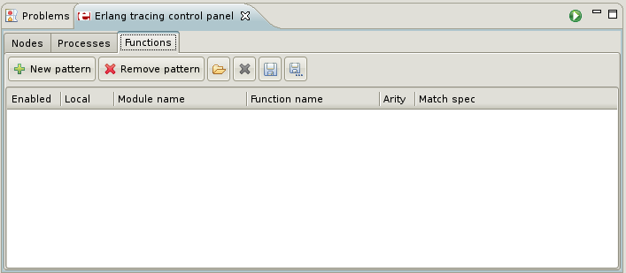
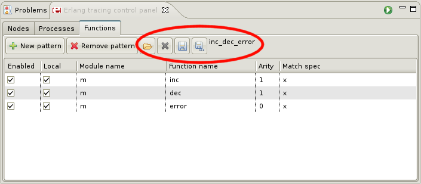

Functions tab
In this tab you can choose which functions you want to trace by creating trace patterns. To enable
tracing function calls you have to set
call
flag for process.

Functions panel
Adding and deleting patterns
To add new pattern simply click
New pattern
button (to delete select pattern and click
Remove pattern
)
You can also add or delete trace pattern from Outline view's context menu. To do it
select function and click Tracing>Add to trace patterns or Tracing>Add to trace
patterns (no arity)). To delete click Tracing>Add remove from trace patterns or Tracing>Add
remove from trace patterns (no arity).

Outline view
Editing trace patterns
You can set following parameters:
- Enabled - if selected this pattern will be used, if not it will be omitted
- Local - if selected local calls to this function will
be traced too ("local calls" - inside other function)
- Module name - function's module
- Function name - function's name
- Arity - function's arity. If not set all calls will be traced disregarding function's arity
- Match spec - match specification or you can leave it empty
if you do not want to set match specification for this function
Match specifications are small programs that express a condition to be matched over a set of
arguments. They deal with the filtering and manipulation of trace events and if they match
successfully, a trace event is generated and some predefined actions can be executed.
They are defined in a form of "literal funs" what means:
- they take only one argument representing list of given arguments
- they return single atom
- you can use same guard expressions as in other funs
You can find more about match specs in Erlang documentation:
http://www.erlang.org/doc/apps/erts/match_spec.html
.
Match spec example
Match spec that matches all function calls with argument which is an integer between 1 and 10:
fun([X]) when is_integer(X), X > 1, X < 10 ->
true
end.
"x" shortcut
The most popular use of match specs is specifying that you what trace exceptions and returns from
functions. Instead of writing such match spec you can just type "x" (that is why after creating new
pattern you see "x" in
Match spec
column).
Saving and restoring configuration
There are four buttons:
- Load pattern set... - loads previously saved configuration
- Delete current pattern set... - deletes current configuration
- Save current pattern set - saves current configuration
- Save current pattern set as... - saves current configuration under new name
After loading or saving configuration it's name appears next to
Save current pattern set as...
button.

Saving and restoring configuration